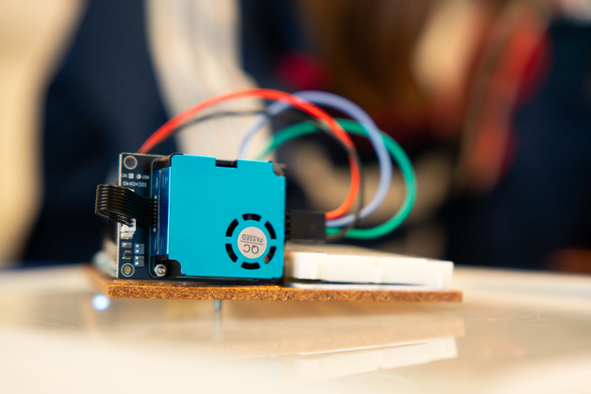

Voorspel
Leerlingen kiezen een plek of situatie en noteren wat ze verwachten te meten.
Leerlingen formuleren een onderzoeksvraag, meten fijnstof in hun omgeving, vergelijken meetmomenten en schrijven een besluit op basis van eigen data.
Leerlingen kiezen een plek of situatie en noteren wat ze verwachten te meten.
De Arduino stuurt PM1, PM2.5, PM10 en AQI naar de browser. De grafiek loopt live mee.
Meerdere metingen komen samen in een overzicht met gemiddelden, maxima en grafieken.
Het rapport bundelt onderzoeksvraag, meetgegevens, grafiek, besluit en reflectie.
Presenteer jouw bevindingen aan de klas met een publieke postersessie.
De opstelling
Leerlingen sluiten de sensor aan, meten in een echte omgeving en verzamelen zo hun eigen meetresultaten.

PM1, PM2.5 en PM10 worden zichtbaar als concentratie in µg/m³.
Leerlingen vergelijken gemiddelde en maximale waarden in plaats van losse meetpunten.
Een meetplek, meetomstandigheden en mogelijke bron worden expliciet genoteerd.
De PDF maakt van de meting een korte, bespreekbare onderzoeksoutput.
Die output verwerken leerlingen tot een behapbare poster.
De platformen bouwen het computationeel denken op. De projecten gebruiken dat denken in een vakoverschrijdende opdracht waarin leerlingen bouwen, meten, testen en besluiten.
De webversie werkt met echte hardware of in demomodus. Daardoor kun je de opdracht voorbereiden, klassikaal tonen en laten oefenen zonder dat elke groep meteen een werkende sensor nodig heeft.